vibecook / mesh networking
Simple network programming on top of Tailscale.
Your devices, talking to each other directly. TCP, UDP, QUIC, WebSocket and HTTP between the machines on your tailnet, plus messaging, file transfer and synced state. No server to run.
pnpm add @vibecook/truffle
- transports
- mesh.net
- mesh.http
- mesh.dgram
- mesh.ws
- mesh.quic
Four commands, two machines.
The CLI joins the same mesh your code does. List the devices, send a message, copy a file, publish a port.
Hello, mesh.
All you need is a Tailscale account. truffle brings its own Tailscale node, and the first run opens a sign-in link.
In your app
Node.js 18 or later.
pnpm add @vibecook/truffleThe CLI
macOS and Linux. On Windows, run the second line in PowerShell.
curl -fsSL https://vibecook-dev.github.io/truffle/install.sh | shiwr -useb https://vibecook-dev.github.io/truffle/install.ps1 | ieximport { createMeshNode } from '@vibecook/truffle';
const mesh = await createMeshNode({ appId: 'notes' });
// Hear from every device running the same app
mesh.onMessage('chat', (msg) => console.log(msg.payload));
// Find one, and talk to it
const bob = await mesh.peer('bob-laptop', { waitMs: 5000 });
await bob?.sendJson('chat', { text: 'hello' });
// Or use the sockets you already know
mesh.net.createServer((socket) => socket.pipe(socket)).listen(7000);// iOS 18.1 and later
.package(url: "https://github.com/vibecook-dev/truffle.git", from: "0.7.7")cargo add truffleNo server in the middle.
Tailscale carries the bytes and knows who everyone is. truffle gives your code the APIs.
What you get.
-
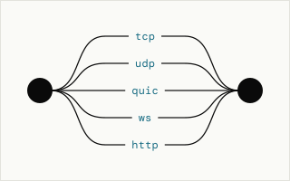
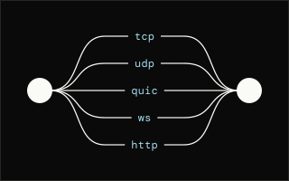
Five transports
mesh.net,http,dgram,wsandquic, shaped like the Node.js modules. -
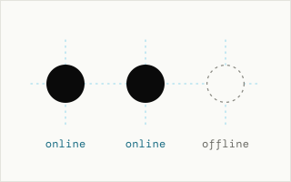
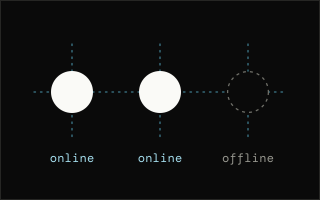
Peers
Devices running your app find each other. You hold a
Peer, not an address. -
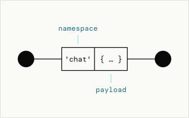
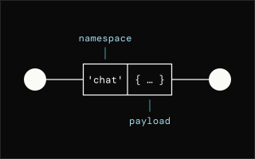
Messages
peer.sendJson('chat', …), routed by namespace. Send to one peer or broadcast to all. -
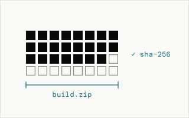
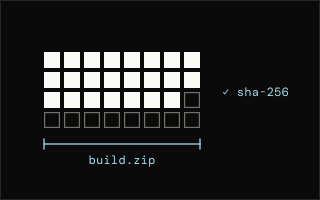
Files
Send a file to a peer. Every transfer is checked with SHA-256.
-
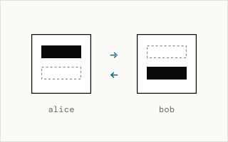
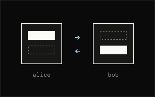
Synced stores
Each device owns its slice of the state and sees everyone else's.
-
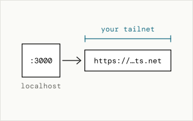
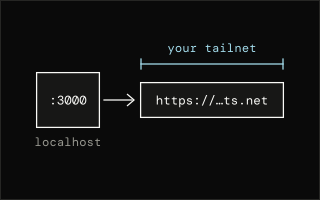
Serve
mesh.serve()puts a local port or folder on your tailnet, with HTTPS.
How it works.
The same layers on each device, with Tailscale underneath carrying the bytes.
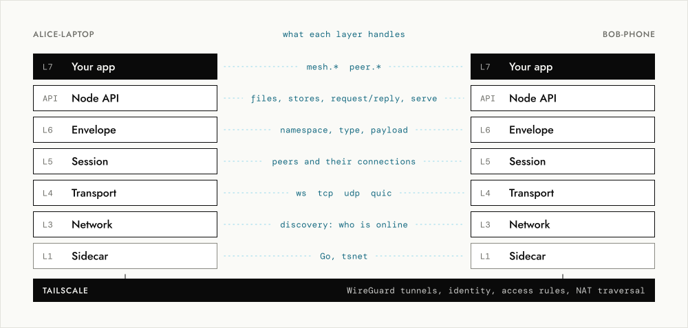
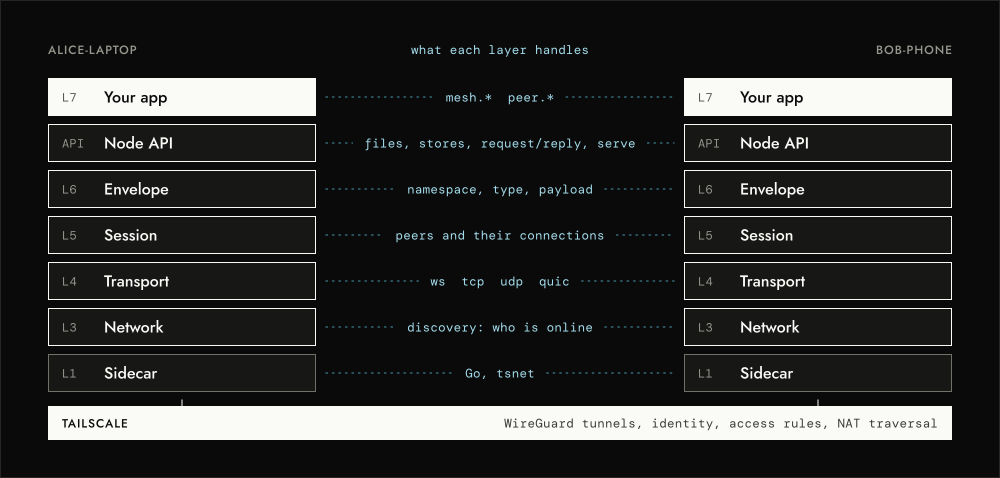
appId is the boundary: devices only see peers running the same app. One exception is HTTP you publish with mesh.serve, which your whole tailnet can open.
Measure it yourself.
truffle bench runs ten workloads between your own machines.
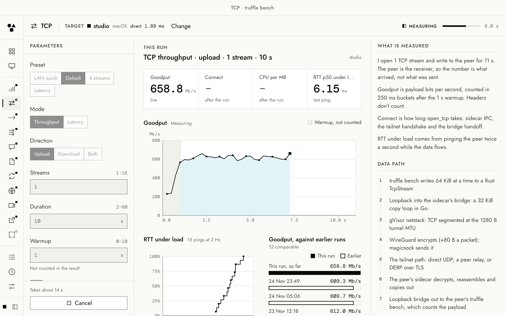
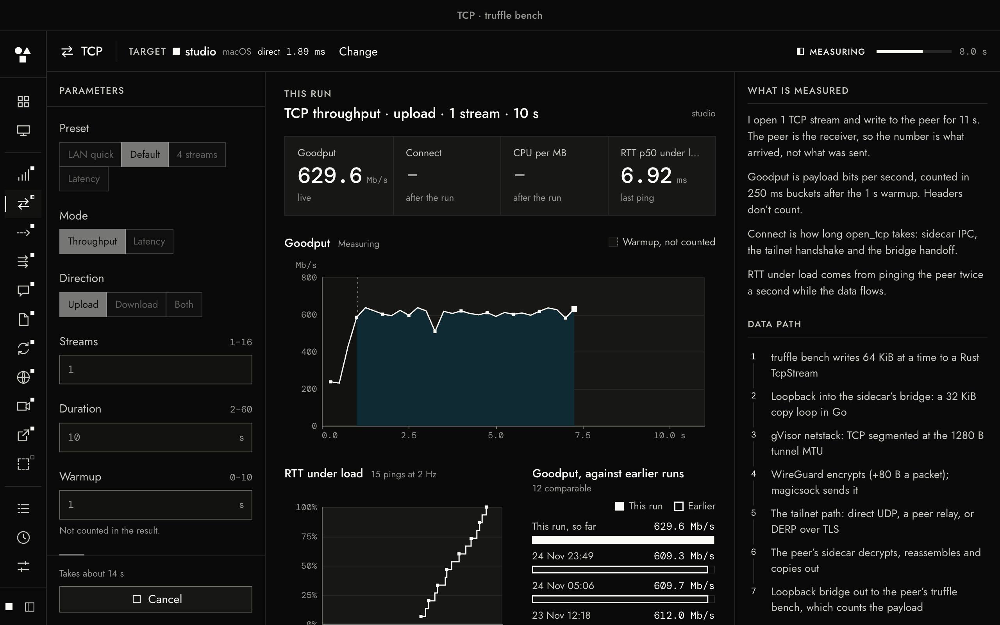
Packages.
Runs on macOS, Linux and Windows. The Swift package runs on iOS 18.1 and later.
| Package | Where | What |
|---|---|---|
@vibecook/truffle | npm | The JavaScript and TypeScript API |
@vibecook/truffle-react | npm | React hooks: useMesh, useAuth, useSyncedStore |
truffle CLI | install script | 14 commands and an interactive TUI, with --json for agents |
truffle, truffle-core | crates.io | The Rust core |
| Truffle Swift | SwiftPM | The same mesh on iOS, wire compatible |
truffle-tauri-plugin | the repository | Tauri v2 plugin |
| truffle bench | the repository | Benchmark engine, CLI and desktop app |
Keep reading.
- API reference
- Every namespace, option and Peer rule.
- Examples
- Ten runnable demos: discovery, chat, shared state, netcat over TCP, QUIC streams, Express over the mesh, a static site with an API, exposing a dev server, WebSocket chat, and an Electron playground.
- Serving HTTP
- Publishing a port, a folder or a set of routes with
mesh.serve. - API stability
- What is stable, and what can still change.
- RFCs
- The design record behind each part.
- Changelog
- What changed in each release.